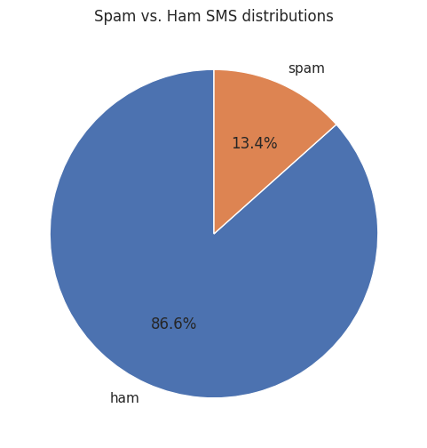
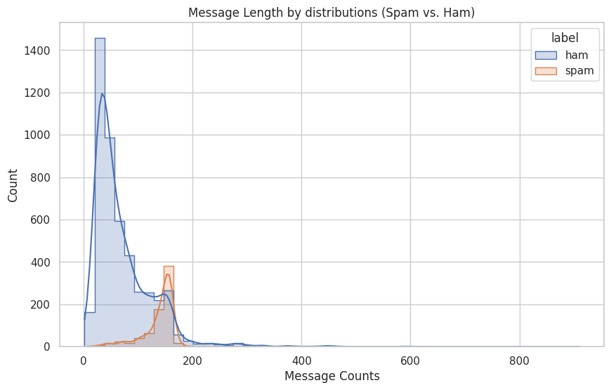
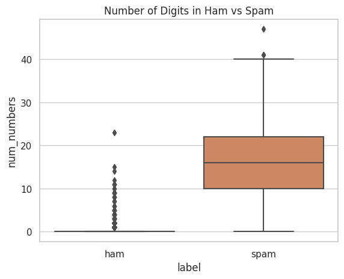
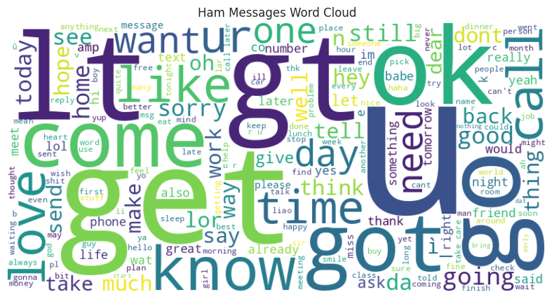
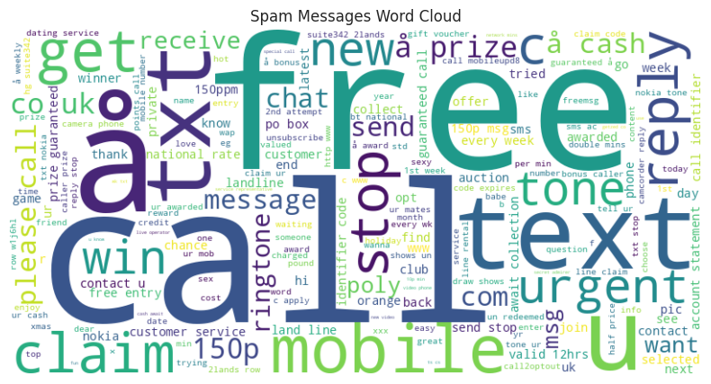
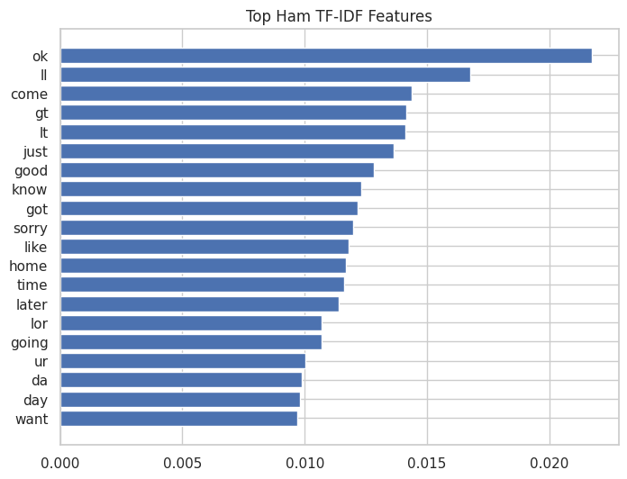
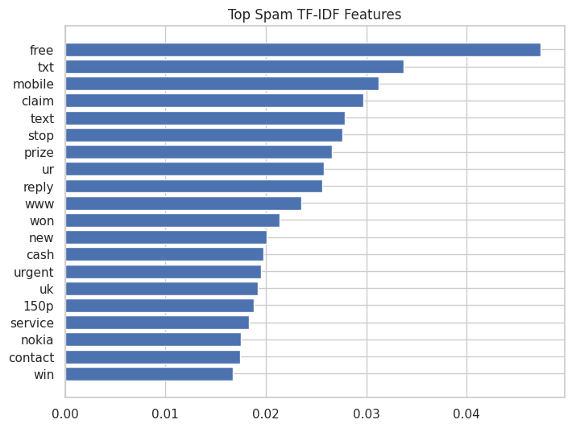
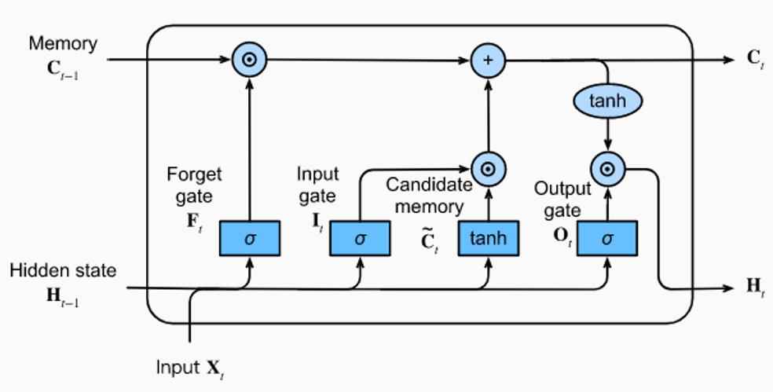

EDA Libraries & Dependencies
Core tools used for text inspection, statistical summaries, and visualization.
TfidfVectorizer converts raw SMS text into weighted lexical features and ranks spam/ham-specific terms.Raw Fields & Engineered EDA Features
The notebook extends the original SMS dataset with interpretable text statistics and pattern flags.
| Field / Feature | Type | Role in the EDA Notebook |
|---|---|---|
label | Target | Binary class indicating whether a message is ham or spam. |
text | Raw text | The SMS body used for lexical analysis, word clouds, TF-IDF, n-grams, and downstream sequence modeling. |
text_length, char_count, word_count | Numeric | Length descriptors showing that spam messages are typically longer and denser than ham messages. |
punct_count, num_count, upper_count, emoji_count, num_numbers | Numeric | Surface-level text features that highlight promotional formatting, numerical codes, and punctuation-heavy spam behavior. |
has_url, has_phone, has_email | Boolean | Regex-based detection signals for external contact / redirection patterns common in unsolicited messages. |
duplicate_texts and spam-specific vocabulary | Analytical | Used to reveal repeated campaigns, shared templates, and uniquely spam-oriented vocabulary. |
EDA Pipeline From Raw Messages to Text Signals
The notebook moves from descriptive statistics to semantic and pattern-based analysis.
v1 and v2, and rename them to label and text.char_count and word_count, then compute overall and per-class descriptive summaries.What the Numbers Say About Spam vs Ham
The strongest quantitative contrasts appear in message length, numeric content, and redirection patterns.
Spam is much longer
The notebook reports 71.02 average characters and 14.20 average words for ham, versus 138.87 characters and 23.85 words for spam. That means spam messages are almost twice as long on average and carry more packed information per message.
Spam contains far more machine-like artifacts
Regex-based checks show 104 spam URLs against only 2 ham URLs, 18 spam emails against 2 ham emails, and an average of 15.76 digits per spam message versus only 0.30 for ham.
Duplicate message behavior is visible
The notebook finds 684 duplicated texts, which is consistent with mass-sent campaigns and template-driven promotional spam. This is a useful operational clue because spam often scales by repeating a few message forms.
Everyday speech vs incentive language
Common ham tokens include u, go, come, know, and good. In contrast, spam heavily features call, free, txt, mobile, claim, and reply.
EDA Visual Evidence
The notebook’s plots show class imbalance, structural differences, and the token-level contrast between spam and ham.
These figures show the dataset skew toward ham and demonstrate how message length and digit density shift for spam.



The clouds reveal the underlying language style of the two classes: casual personal texting for ham, incentive and redirection language for spam.


These bar charts summarize the most discriminative TF-IDF features in each class, making the lexical split more explicit.


TF-IDF & N-gram Takeaways
The notebook captures both broad vocabulary differences and high-value spam phrases.
Top ham indicators
Ham TF-IDF is dominated by conversational tokens such as ok, ll, come, just, good, know, home, and later. These words reflect everyday coordination, social interaction, and informal speech.
- Common bigrams:
ll later,let know,good morning - Common trigrams:
sorry ll later,happy new year
Top spam indicators
Spam TF-IDF is strongly anchored by free, txt, mobile, claim, prize, reply, won, cash, and urgent. These are classic conversion-oriented spam terms.
- Common bigrams:
po box,1000 cash,prize guaranteed - Common trigrams:
draw shows won,private 2003 account,urgent trying contact
Representative Feature Engineering Code
A compact excerpt showing how the notebook engineers structural features and TF-IDF summaries.
# structural text features df['char_count'] = df['text'].astype(str).apply(len) df['word_count'] = df['text'].astype(str).apply(lambda x: len(x.split())) df['num_numbers'] = df['text'].str.count(r'\d') df['has_url'] = df['text'].str.contains(r'https?://\S+|www\.\S+', regex=True) df['has_email'] = df['text'].str.contains(r'\S+@\S+', regex=True) # class-wise TF-IDF diagnostics tfidf = TfidfVectorizer(stop_words='english', max_features=5000) tfidf_matrix = tfidf.fit_transform(df['text']) features = tfidf.get_feature_names_out() spam_tfidf_mean = tfidf_matrix[(df['label'] == 'spam').values].mean(axis=0).A1 ham_tfidf_mean = tfidf_matrix[(df['label'] == 'ham').values].mean(axis=0).A1 def top_terms(scores, features, k=20): idx = np.argsort(scores)[-k:][::-1] return [(features[i], scores[i]) for i in idx]
Exploration Conclusions
The EDA notebook establishes why spam detection is both a lexical and structural classification problem.
Class imbalance is real: spam represents only about 13.41% of the corpus, which makes imbalance-aware modeling essential.
Spam looks different at multiple levels: it is longer, more numeric, more repetitive, and more likely to contain URLs, marketing phrases, and urgency-driven wording.
EDA directly informs modeling: the later notebook’s use of class_weight, controlled sequence length, and learned vocabulary is strongly supported by the exploratory evidence gathered here.
Modeling Libraries & Dependencies
Main libraries behind tokenization, sequence modeling, hyperparameter search, and training diagnostics.
TextVectorization, StringLookup, Embedding, Bidirectional LSTM, callbacks, metrics, and tf.data pipelines.From Raw Strings to Binary Predictions
The modeling notebook organizes preprocessing, tuning, and final training as a staged NLP pipeline.
train_test_split using TEST_SPLIT_RATIO = 0.2 and stratification to preserve class balance.TextVectorization, encode targets with StringLookup, and build optimized tf.data pipelines.{0: 0.5774, 1: 3.7296}, giving more importance to spam examples during training.EarlyStopping, ReduceLROnPlateau, and ModelCheckpoint.Core Modeling Theory
The notebook combines neural sequence modeling with binary decision theory and Bayesian search.
TextVectorization is mapped into a dense semantic vector. In the best run, the learned embedding dimension is 16.LSTM Cell Intuition
The provided diagram highlights the gating structure that lets LSTMs manage long-range sequence memory.

Model Parameters & Training Controls
The notebook keeps the configuration explicit and reproducible across preprocessing, search, and final training.
| Component | Chosen Value | Why It Matters |
|---|---|---|
MAX_LENGTH | 100 | Every SMS is padded or truncated to a fixed sequence length, making batching consistent. |
VOCAB_SIZE | 10000 (actual learned size: 8439) | Caps vocabulary growth while still preserving most useful tokens in the corpus. |
BATCH_SIZE | 128 | Used in the optimized tf.data pipeline for throughput and stable updates. |
Train / Validation Split | 80% / 20% | Provides a held-out set for tuning and callback-driven training decisions. |
Best Embedding Dim | 16 | Compact semantic representation learned jointly with the classifier. |
Best LSTM Units | 16 | Controls sequence modeling capacity in the Bi-LSTM encoder. |
Best Dense Head | 1 dense layer with 128 units | Acts as the final nonlinear decision layer before binary prediction. |
Best Dropout Rate | 0.4442 | Regularizes the post-LSTM representation and reduces overfitting. |
Best Learning Rate | 0.0003231 | Tuned to balance convergence speed and stability. |
Best Weight Decay | 0.0006193 | Supports generalization by softly penalizing overly large weights. |
Hyperparameter Search & Final Performance
Optuna identifies the champion model, then the final training stage sharpens its validation performance.
AUC, with best validation AUC values around 0.99. Combined with class weighting, this shows the model is not simply learning the majority class but genuinely separating spam from ham.Key Modeling Code Snippets
Two excerpts capture the pipeline’s transformation logic and the final neural architecture.
# learn the vocabulary from raw training text def text_vectorize(train_dataset): vectorizer = tf.keras.layers.TextVectorization( max_tokens=10000, output_sequence_length=100, standardize='lower_and_strip_punctuation' ) text_only_dataset = train_dataset.map(lambda text, label: text).batch(64) vectorizer.adapt(text_only_dataset) return vectorizer # encode text + labels and optimize the tf.data pipeline def preprocessing(dataset, text_vectorizer, label_encoder): dataset = (dataset .map(lambda text, label: (text_vectorizer(text), label_encoder(label))) .filter(lambda x, y: tf.shape(x)[0] == 100) .shuffle(1024) .batch(128, drop_remainder=True) .prefetch(tf.data.AUTOTUNE) ) return dataset
def create_final_model(hparams): inputs = tf.keras.Input(shape=(100,)) x = tf.keras.layers.Embedding(10000, hparams['embedding_dim'])(inputs) x = tf.keras.layers.Bidirectional( tf.keras.layers.LSTM(hparams['lstm_units']) )(x) x = tf.keras.layers.Dropout(hparams['dropout_rate'])(x) for i in range(hparams['num_dense_layers']): units = hparams[f'dense_layers_{i}'] x = tf.keras.layers.Dense(units, activation='relu')(x) outputs = tf.keras.layers.Dense(1, activation='sigmoid')(x) return tf.keras.Model(inputs, outputs) optimizer = tf.keras.optimizers.AdamW( learning_rate=3.230576384522256e-4, weight_decay=6.193087602825927e-4 )
Callback Design & Robust Optimization
The notebook protects the final model with early stopping, checkpointing, learning-rate decay, and TensorBoard logging.
EarlyStopping
The notebook monitors val_loss with patience=10 and restores the best weights, preventing the network from drifting after its strongest validation phase.
ModelCheckpoint
The best-performing checkpoint is saved to SMS_Spam_best_model.keras, ensuring that the lowest-validation-loss model survives regardless of how later epochs behave.
ReduceLROnPlateau
Whenever validation loss stalls, the learning rate is multiplied by 0.3, which helps the model settle into a better local optimum rather than oscillating.
TensorBoard logging
Training histories are exported to TensorBoard logs so the run can be inspected, compared, and audited beyond just the final metric snapshot.
Final Conclusion & Performance Summary
The modeling notebook turns the EDA findings into a strong, well-regularized sequence classifier.
End-to-end result: the project advances from raw SMS strings to a tuned Bidirectional LSTM with 98.87% best validation accuracy and a best recorded validation loss of 0.0564.
Why it works: the model design aligns closely with the EDA findings — it respects class imbalance, leverages tokenized sequential context, and optimizes for minority-class sensitivity with precision / recall monitoring.
Engineering takeaway: this notebook is more than a simple baseline. It demonstrates a clean NLP workflow with dataset splitting, vocabulary learning, label encoding, TensorFlow data pipelines, Optuna tuning, callback-driven convergence, and saved checkpoint artifacts.
Possible next steps:
- Compare the Bi-LSTM against GRU, CNN-text, or Transformer baselines.
- Evaluate threshold tuning for spam recall vs false positives.
- Export the saved model and preprocessing artifacts for a lightweight inference API.
- Test character-level or subword tokenization for noisy SMS variants.